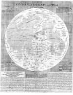

Plenilunii lumina Austriaca Philippica. [Door] Michael Florentius van Langren. Kopergravure, 490 x 380 mm, diameter 340 mm. [Brussel 1645.] -- (COLLBN 505-10-003)
Het zoeken naar een betrouwbare methode voor het bepalen van de geografische lengte bracht veel astronomen ertoe om instrumenten daarvoor te ontwerpen. In het geheel van die wetenschappelijke activiteit is ook deze kaart van de volle maan tot stand gekomen.
Michael Florent van Langren (1598-1675), als kosmograaf van de Spaanse koning Filips IV werkzaam in de Zuidelijke Nederlanden, stamde uit een geslacht van beroemde cartografen, die tegen het einde van de zestiende eeuw in Amsterdam vooral als globemakers bekendheid hadden gekregen. Zijn vader Arnold was circa 1609 naar Antwerpen vertrokken.
Van Langren was al sinds 1621 bezig met het uitwerken van een nieuwe methode, die hierop neerkwam, dat het tijdsverschil tussen twee meridianen -- en dus ook de geografische lengte -- kon worden vastgesteld aan de hand van de tijdsbepaling van het oplichten en donkerder worden van de maanbergen of, zoals Van Langren zich uitdrukte, van de ‘lumina’ (maanlichten). Om de verschillende ‘lumina’ goed te kunnen herkennen en lokaliseren had hij behoefte aan een maan-’geografie’, waarin aan wat hij voor zeeën, landen en bergen hield namen werden gegeven. Voor zijn plan om een uitvoerige verhandeling over de maan te schrijven zocht hij financiële steun bij de infante Isabella, de dochter van Filips II, die een grote interesse voor Van Langrens plan toonde. Hij werd zelfs in de gelegenheid gesteld naar Spanje te reizen, waar hij drie jaar verbleef en de koning zover wist te krijgen, dat deze hem een riant jaarsalaris toezegde. Teruggekeerd in Brussel, waar hij het zonder de steun van Isabella moest doen, omdat die inmiddels overleden was, heeft hij uiteindelijk zijn plan toch niet kunnen realiseren. Een laatste poging om belangstelling voor de ‘Selenographia Langreniana’ te wekken door de hier geëxposeerde kaart als een soort aankondiging uit te geven, mislukte ook.
In de geschiedenis van de selenografie, de maanbeschrijving, zal Van Langren bekend blijven als degene die als eerste een complete nomenclatuur heeft ontworpen. Hij koos daarvoor de namen van vorsten en geleerden en vergat bovendien zichzelf niet, getuige het Mare Langreneanum (thans Mare Fecunditatis) en de berg Langrenii. Zijn weldoeners zijn goed bedacht: de krater, thans bekend als Copernicus, draagt op zijn kaart de naam van zijn beschermheer Filips IV en de huidige Oceanus Procellarum is door hem de Oceanus Phillipicus genoemd. Een groep Noordnederlandse geleerden is eveneens vertegenwoordigd: Constantijn Huygens, Gerardus Joannes Vossius, Daniel Heinsius en Caspar Barlaeus.
Zijn nomenclatuur is niet nagevolgd. Johannes Hevelius uit Danzig ontwierp in 1647 voor zijn Selenographia een eigen systeem van naamgeving, terwijl Giovanni Battista Riccioli in de Almagestum novum van 1651 ten slotte de grondslag legde voor de huidige nomenclatuur.
Literatuur
- H. Bosmans, ‘La carte lunaire de Van Langren conservée aux Archives générales du royaume à Bruxelles’, in: Revue des questions scientifiques, 54 (1903), p 108-139.
- H. Bosmans, ‘La carte lunaire de Van Langren conservée a l’Université de Leyde’, in: Revue des questions scientifiques, 67 (1910), p. 248-264.
- J. Keuning, ‘The Van Langren family’, in: Imago mundi, 13 (1956), p. 101-109.
- Z. Kopal and R.W. Carder, Mapping of the moon. Past and present. Dordrecht [etc.] 1974, p. 1-27.
- P. van der Krogt, ‘De maankaart van Michael Florent van Langren (1645)’, in: Caert-thresoor, 2 (1983), p. 36-39.
| vorige pagina | top pagina |